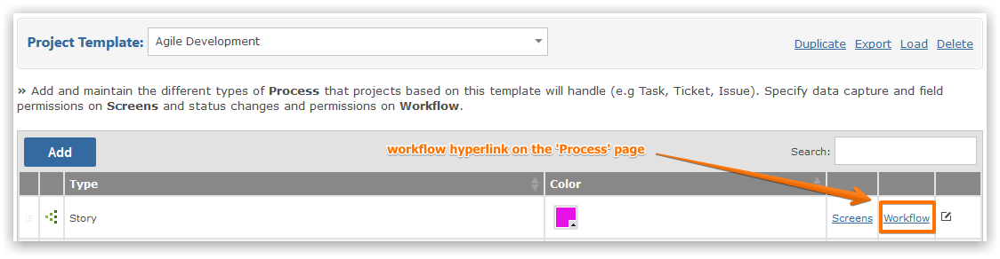
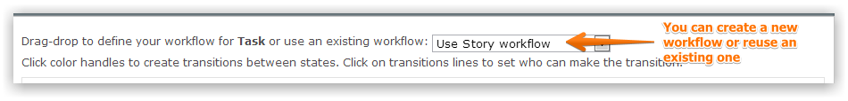
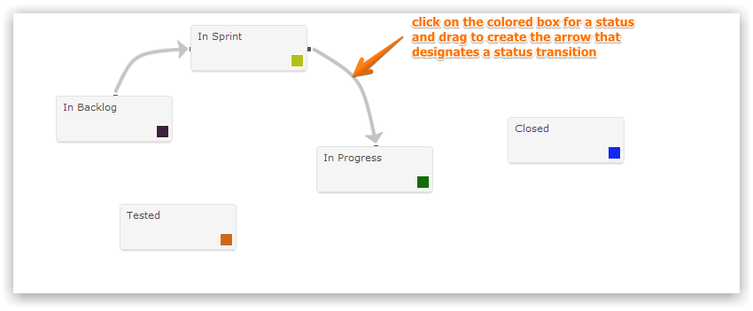
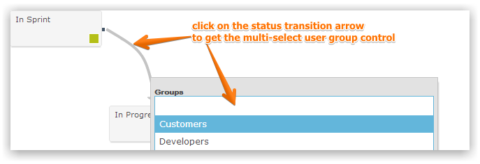
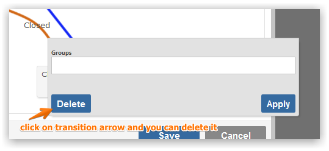

NoteA pre-requisite for defining Workflow is the creation of the Status codes for the Process whose Workflow you wish to define
Make sure that you have selected the Project Template that you wish to maintain Workflow for from the drop-down list. Once you have defined the Status codes for your Project Template, you will want to define your Workflow, which is the transition of your items from one Status to another. To do this, click on the 'Workflow' hyperlink to the right of the screen (on the Process Page).

The Workflow screen shows the Statuses that are available to your process. You can reuse an existing Workflow from another process (select from the drop-down in the top right) or define a new one.

The Drawing Area, a large white space below the Status Cards is where you can drag and arrange the Statuses. Click on the colored box in the card that denotes a Status and hold down the mouse, then as you drag the mouse towards another Status Gemini draws a line connecting the two Statuses, showing the direction in which the Status can flow e.g. From Unassigned to Assigned (and vice versa if you wish).

By default, when you define a status transition Gemini grants access to the system Security Group 'Everyone'. You can change this and limit the ability to make a status change to users within specific security Groups. To do this click on the arrow linking the two states and Gemini will present a multi-select Security Group picker. Select the Groups that are allowed to change the status from the source to the target value.

To delete an existing status transition, click on the arrow linking two Statuses and you will be prompted to delete the link.

The following is an overview of the setup, organization, and capabilities of Workflows within Gemini.